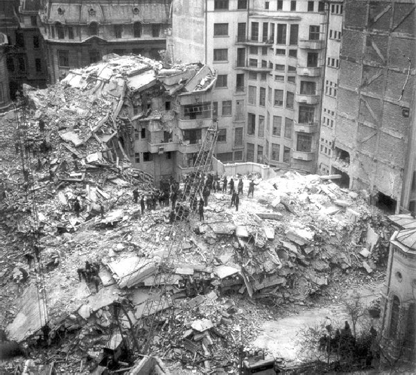
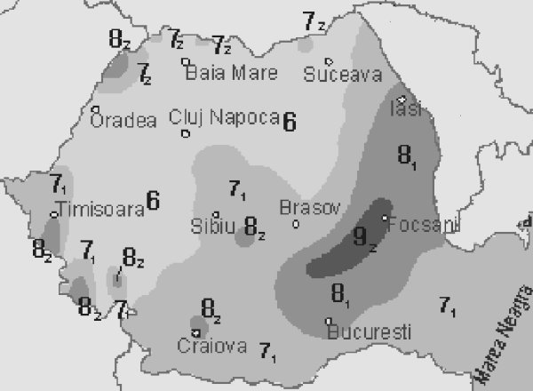
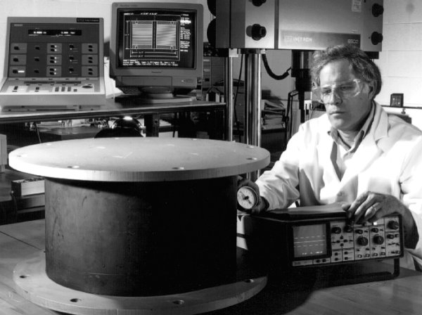
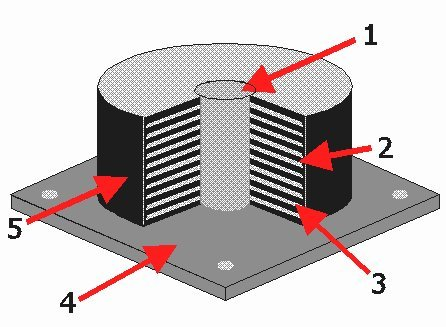
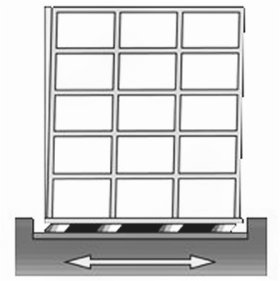
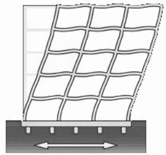
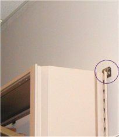
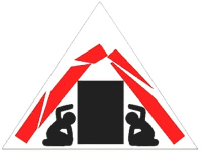

Unde mecanice
C.7. |
|
Protecţie antiseismică |
Energia eliberată brusc de un cutremur poate avea uneori efecte devastatoare (figura 1C7−1).

Fig. 1C7-1. Clădiri din Bucureşti, dărâmate în seara zilei de 4 martie 1977, în urma unui cutremur produs în zona Vrancea.
Când este raportat un cutremur, este precizat epicentrul său (locaţia de pe suprafaţa Pământului aflată deasupra locului în care s−a produs
cutremurul), adâncimea la care acesta s−a produs şi magnitudinea sa pe scara Richter (tabelul 1C7−1).
Tabelul 1C7−1. Scara Richter a magnitudinii cutremurelor.
Magnitudinea
Richter |
Efecte |
Frecvenţa |
| sub 2,0 |
Nu este resimţit de oameni |
8000, zilnic |
| 2,0...2,9 |
În general, nu este resimţit |
1000, zilnic |
| 3.0...3,9 |
Adesea este resimţit, dar arareori provoacă pagube |
49.000, anual |
| 4.0...4,9 |
Obiectele din locuinţe se zguduie, ca atunci când trece în apropiere un vehicul greu |
6.200, anual |
| 5.0...5,9 |
Afectează major, local, construcţiile prost realizate. Construcţiile bine realizate sunt afectate minor. |
800, anual |
| 6.0...6,9 |
Provoacă distrugeri însemnate, până la 100 km de epicentru. |
120, anual |
| 7,0...7,9 |
Provoacă distrugeri majore pe zone întinse. |
18, anual |
| 8,0...8,9 |
Provoacă distrugeri majore, până la ste de km de epicentru. |
1, anual |
| 9,0 şi peste |
Devastează zone până la mii de km de epicentru. |
1, la 20 de ani |
Magnitudinea unui cutremur este corelată cu cea mai mare amplitudine a undelor seismice în epicentru, precum şi cu energia eliberată de cutremur.
O modificare de un grad pe scara Richter este corelată cu o modificare de 10 ori a amplitudinii undelor seismice şi de aproximativ 30 de ori a energiei
eliberată de cutremur. Scara Richter este o scară logaritmică!
 Activitatea experimentală 1C7−1
Activitatea experimentală 1C7−1
Investighează o scară logaritmică, cu mijloace la îndemână.
Pasul 1 Foloseşte spaghetele din două pachete de câte 400 de grame. Frânge una dintre acestea. Clasifică acest proces ca având
gradul 5 (pe "scara spaghetelor").
Pasul 2 Frânge un mănunchi de 30 de spaghete. Clasifică acest proces ca având gradul 6.
Pasul 3 Frânge deodată, aproximativ 900 de spaghete (cele care ţi−au mai rămas din cele două pachete). Reuşeşti? Clasifică
acest proces ca având gradul 7.
Pasul 4 Imaginează−ţi un proces de gradul 8, pe această scară!
Energia eliberată de un cutremur cu magnitudinea 5 pe scara Richter este echivalentă cu explozia subterană a unei bombe nucleare (32 kilotone
exploziv, sau aproximativ 1014 J).
Un cutremur cu magnitudinea 7 eliberează aproape de o mie de ori mai multă energie, provocând devastări ca cele din figura 1C7−1!
 Provocarea 1C7−1
Provocarea 1C7−1
Cum ne putem oare proteja împotriva efectelor devastatoare ale cutremurelor?
 Prima măsură antiseismică: să înţelegem cât mai bine cauzele şi efectele cutremurelor!
Prima măsură antiseismică: să înţelegem cât mai bine cauzele şi efectele cutremurelor!
Mii de staţii din întreaga lume monitorizează în permanenţă vibraţiile Pământului. Cunoaşterea noastră este încă foarte limitată, deoarece instrumentele
nu pot fi introduse prea adânc în scoarţa Pământului (nimeni nu a reuşit să foreze la mai mult de 10 km!).
Analiza atentă a cutremurelor care se produc, oricum, în permanenţă, ne oferă concluzii importante referitoare la riscul seismic al fiecărei zone.
Figura 1C7−2 prezintă harta riscului seismic în România. Cu cât o zonă este este marcată cu o tentă mai închisă de gri, cu atât este mai ridicat
riscul unor efecte devastatoare datorate cutremurelor.

Fig. 1C7-2. Harta riscului seismic în România. Zonele marcate cu tentă mai închisă de gri sunt mai expuse unui risc seismic mare.
A doua măsură antiseismică: să construim cât mai trainic, îndeosebi în zonele cu risc seismic ridicat!
Transferul de energie către o clădire, de la solul care oscilează în timpul unui cutremur, este asemenea transferului de enrgie între doi oscilatori
cuplaţi.
Constructorul unei clădiri poate alege între un cuplaj tare sau unul slab, între o amortizare mare sau una mică, între frecvenţe proprii (ale clădirii) şi ale
undelor seismice apropiate sau diferite.
Provocarea 1C7−2
Tu ce ai alece? Marchează în tabelul 1C7−2 opţiunile tale. Discută−le cu colegii.
Tabelul 1C7−2. Opţiuni pentru o cât mai bună protecţie antiseismică.
| Parametrul |
Opţiuni |
| Cuplajul între sol şi clădire |
tare |
slab |
| Amortizarea clădirii |
mare |
mică |
| Frecvenţa propriilor oscilaţii ale clădirii, în comparaţie cu frecvenţa tipică a undelor seismice din zonă |
foarte apropiate |
foarte diferite |
Figura 1C7−3 prezintă un izolator seismic − un element de cuplaj slab între sol şi clădire, flexibil şi cu o amortizare mare.

a.

b.
Fig. 1C7-3. a. Izolator seismic. b. Schiţa componentelor acestuia.
"Miezul" (1) din figura 1C7−3 este din plumb şi asigură o amortizare mare (plumbul nu este foarte elastic).
Discurile (2) sunt din cauciuc şi asigură flexibilitate (cuplaj slab între sol şi clădire).
Discurile (3) sunt din oţel (asigură rezistenţă mecanică izolatorului).
Placa (4) permite fixarea în fundaţia clădirii (o placă similară, în partea superioară a izolatorului permite fixarea de structura clădirii).
Învelişul (5) este din cauciuc şi protejează întreaga structură a izolatorului.
Utilizarea izolatorilor seismici limitează drastic energia transferată clădirii în timpul unui cutremur (figura 1C7−4, a).

a.

b.
Fig. 1C7-4. a. Clădire izolată antiseismic. b. Clădire ancorată rigid în fundaţie.
În cazul unei clădiri ancorate rigid în fundaţie, energia transferată în timpul unui cutremur poate avea efecte devastatoare (figura 1C7−4, b).
A treia măsură antiseismică: să fixăm obiectele care s−ar putea răsturna în timpul unui cutremur!
Chiar dacă structura clădirii rezistă unui cutremur, foarte multe pagube se produc prin răsturnarea obiectelor din interiorul locuinţelor, îndeosebi a
pieselor de mobilier masive şi înalte, cum sunt dulapurile.
Fixarea acestora de pereţi este o măsură pe care o poate lua oricare dintre noi, reducând astfel considerabil riscul unor pagube însemnate (figura 1C7−5).
|  |
Fig. 1C7-5. Fixarea unui dulap care s−ar putea răsturna în timpul unui cutremur.
|
A patra măsură antiseismică: Să avertizăm oamenii cât mai din timp de producerea unui cutremur!
Nimeni nu poate prezice încă locul, momentul şi magnitudinea unui viitor cutremur, în ciuda eforturilor depuse pentru aceasta!
Totuşi, putem avertiza oamenii chiar în clipa în care se produce un cutremur! Un senzor, plasat în zona în care este foarte probabilă producerea
unui cutremur, trimite un semnal radio către cei interesaţi. Perturbaţiile electromagnetice (semnalele radio sau lumina) se propagă în aer cu aproape
300.000 km/s, de zeci de mii de ori mai repede decât undele seismice!
În primăvara anului 2006, în zona Vrancea (zona cea mai activă seismic din România) a fost instalat un sistem care întrerupe automat distribuţia gazului
metan în Bucureşti, cu 30 de secunde înainte ca undele unui seism produs în Vrancea să ajungă la Bucureşti!
În viitor, de serviciile acestui sistem de avertizare vor beneficia centrala nucleară de la Cernavodă, spitalele, căile ferate şi, nu în ultimul rând,
locuitorii.
A cincea măsură antiseismică: să ne comportăm raţional în timpul unui cutremur!
Panica iscata în timpul unui incident major (cum este un cutremur) provoacă adesea mai multe victime decât incidentul în sine!
Fiecare dintre noi trebuie să înveţe din timp cum să se comporte în situaţii limită, pentru a−şi mări şansele de supravieţuire.
 Dacă eşti surprins de un cutremur în exteriorul unei clădiri, îndepărtează−te
într−un loc deschis, altfel ai putea fi lovit de panouri care cad, cioburi de sticlă şi elemente de zidărie care pot fi expulzate din structurile
care se clatină.
Dacă eşti surprins de un cutremur în exteriorul unei clădiri, îndepărtează−te
într−un loc deschis, altfel ai putea fi lovit de panouri care cad, cioburi de sticlă şi elemente de zidărie care pot fi expulzate din structurile
care se clatină.
Dacă eşti surprins de un cutremur în interiorul unei clădir, rămâi în interior!
Liftul şi casa scărilor sunt locuri în care şansa de supravieţuire este aproape nulă! Scările clădirilor înalte cedează primele, iar panica iscată de
oamenii care năvălesc este chiar mai periculoasă decât cutremurul însuşi!
Închide orice flacără deschisă şi opreşte alimentarea cu energie electrică. Incendiile provocate de fisurarea conductelor de gaz şi scurtcircuite provoacă
adesea cele mai multe pagube.
Ghemuieşte−te jos, LÂNGĂ un obiect mare şi rezistent (canapea, fotoliu), cu spatele spre ferestre! Obiectele mari, chiar dacă sunt parţial distruse
de grinzi şi plafoane care se prăbuşesc, oferă în jurul lor un mic spaţiu protejat, în adevărate triunghiuri ale vieţii (figura 1C7−6).
|  |
Fig. 1C7-6. Reprezentarea simbolică a triunghiurilor vieţii.
|
Un telefon mobil (sau chiar un fluier) îţi poate salva viaţa dacă eşti blocat sub dărâmături. Este esenţial să−ţi faci cumva semnalată prezenţa,
astfel ca salvatorii să poată ajunge la tine.
Existe numeroase detalii ale comportamentului raţional înainte, în timpul şi dupa producerea unui cutremur.
Accesează acest ghid (aproape) complet!